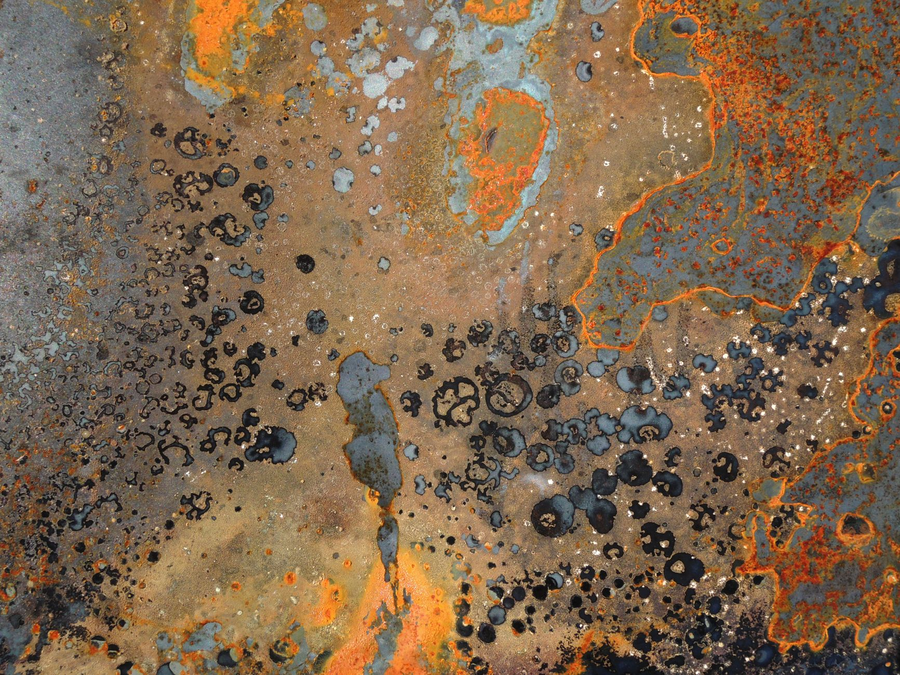

중국 광물통제 '가격충격'에서 '할당통제'로 전환

중국 상무부는 수출허가 심사 기준을 수량 기반에서 최종 수요처·용도 기반으로 전환했다. GaN 전력반도체 기판용 갈륨, 광통신 광섬유용 게르마늄, AI 로봇 액추에이터용 네오디뮴 자석 소재에 대한 실질 할당이 이미 작동 중이다. 현장에서 파악한 허가 승인율은 신청 건수 대비 40~60% 수준이며, 심사 리드타임은 2023년 평균 3주에서 2025년 10~14주로 늘었다.
갈륨 국제가격은 kg당 220달러에서 약 2,000달러로 9배 폭등했으나 지금 현장의 더 큰 문제는 가격이 아니다. 승인 여부가 불투명한 '허가 불확실성'이 생산 계획 자체를 흔든다. 삼성전자·SK하이닉스·LG이노텍이 GaN 전력반도체·광통신 모듈 생산을 확대하는 과정에서 원료 조달 가능 여부가 중국 심사관 결정에 달린 구조가 됐다.
AI·로봇 제조업체들의 핵심 소재 수요는 2025년 대비 2026년 50% 이상 증가 전망이다. 인텔·퀄컴·엔비디아 등 팹리스가 GaN 기반 전력 관리 칩 수요를 급확대하는 시점과 맞물려 공급 병목이 극대화된다. 인텔의 차세대 서버 플랫폼에 탑재될 GaN 전력 모듈 출하량은 2026년 전년 대비 3배 확대 계획이나 원료 조달 계획은 미완이다.
중국 이외 갈륨 생산 가능국은 고려아연(한국·2028년 예정 연 15.5t), 러시아(서방 제재 중), 카자흐스탄(2030년 이전 상업 생산 불가)뿐이다. 한국 연간 갈륨 수요 추정치 40~50t 대비 고려아연 계획 생산량은 30~40% 수준이며, 공백 기간인 2025~2027년을 메울 대안 공급망이 현재로서는 없다.
이번 전환의 본질은 '자원 무기화 2.0'이다. 1.0이 희토류 가격 조작(2010년 중·일 분쟁)이었다면, 2.0은 최종 수요처를 선별해 공급을 배분하는 허가 시스템이다. 중국은 이제 GaN 칩이 어느 국가 방산 시스템에 들어가는지를 심사 기준으로 삼을 수 있다. 소재 공급이 지정학 도구로 완전히 편입된 것이다.
한국 기업의 실질 리스크는 납기 예측 불가 → 고객사 이탈 → 시장점유율 손실 연쇄다. 원료 허가가 나지 않아 생산 일정을 못 지키면 TSMC·인텔 같은 글로벌 파운드리 고객과의 공급 계약이 해지될 수 있다. 단순 원가 상승보다 '거래 관계 단절' 리스크가 훨씬 크다.
단기 수혜는 중국 GaN 기판 제조업체들이다. Sanan Optoelectronics·BM에 등 중국 화합물반도체 기업은 원료 우선 배분 구조에서 글로벌 수요 급증 속 원가 우위를 확보한다. 이들의 GaN 기판 시장 점유율은 2024년 35%에서 2026년 50% 이상으로 확대될 수 있다.
중장기 수혜는 SiC(탄화규소) 전력반도체 전환 완료 기업들이다. STMicroelectronics·Wolfspeed는 갈륨 의존 없이 전력 모듈 시장을 잠식한다. 한국에서는 SiC 기판 소재를 독자 개발 중인 SK실트론이 2026~2027년 공급 계약 확보 경쟁에서 유리한 위치다.
직접 타격은 GaN 전력반도체 생산 확대를 추진 중인 한국·미국·유럽 기업들이다. 갈륨 수급 불확실성이 생산 계획을 흔들고, 원료 대체처를 찾지 못한 국내 GaN 소재 중소기업은 납기 6~12개월 지연이 현실화된다.
AI 로봇 완성업체도 피해권에 진입한다. 네오디뮴 자석 소재 공급 통제 강화로 Boston Dynamics·Figure AI·현대로보틱스의 액추에이터 모터 원가가 2024년 대비 30~50% 상승 압박을 받는다. 이는 AI 로봇 보급가 상승 → 시장 성장 속도 둔화로 연결된다.
구매담당자는 갈륨·게르마늄·네오디뮴 재고 전략을 3개월 버퍼에서 6~9개월 전략 비축으로 전환해야 한다. 허가 심사 지연을 감안하면 주문에서 실물 인도까지 최소 4~6개월 리드타임을 생산 계획에 반영해야 계약 불이행 리스크를 줄일 수 있다.
투자자 시각에서 SiC 전력반도체 소재 기업과 재활용 갈륨 기술 보유 기업을 주목할 시점이다. 미국 AXT Inc., 독일 Freiberger Compound Materials처럼 중국 외 갈륨 기판 공급처가 이미 프리미엄 장기 계약 확보에 들어갔으며, 이들의 오더북은 2026~2027년까지 채워지고 있다.
실제 조달 현장에서는 — 중국 허가 심사 리드타임이 2023년 평균 3주에서 2025년 10~14주로 늘어난 것을 직접 확인했다. 지금 당장 SiC 기반 대체 공정 전환이나 재활용 갈륨 공급사와 예비 MOU를 체결해두지 않으면, 2026~2027년 물량 확보 경쟁에서 후순위로 밀려 계약 해지 도미노를 맞게 된다.
이 포스팅은 쿠팡 파트너스 활동의 일환으로 수수료를 제공받습니다.